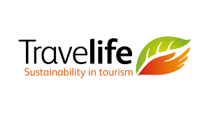
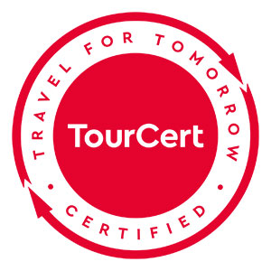
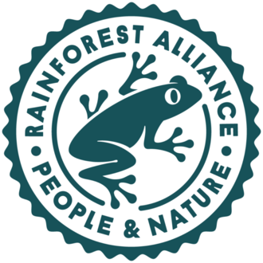

De la práctica informal
a la certificación internacional
1
Prácticas informales
Ya haces algo responsable — pero no está documentado ni es visible para un comprador externo
▾
2
Prácticas documentadas
Políticas internas, procedimientos escritos, datos de impacto recopilados — ya comunicables a un comprador
▾
3
Certificación local — Sello MinCIT u otra entidad colombiana

Accesible, reconocida en Colombia, buen primer paso para visibilidad con compradores de nivel regional
▾
4
Certificación internacional



Reconocida por compradores europeos — más costosa y exigente, pero abre catálogos que de otra forma están cerrados
▾
La mayoría empieza entre el nivel 1 y el 2. El siguiente bloque introduce una herramienta de auto-evaluación gratuita para saber exactamente dónde estás — y qué prácticas ya tienes aunque no estén documentadas.

")


")
")